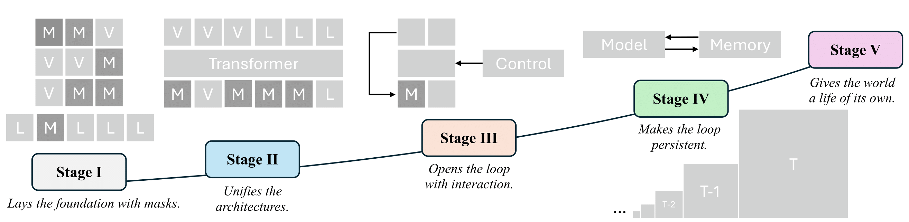
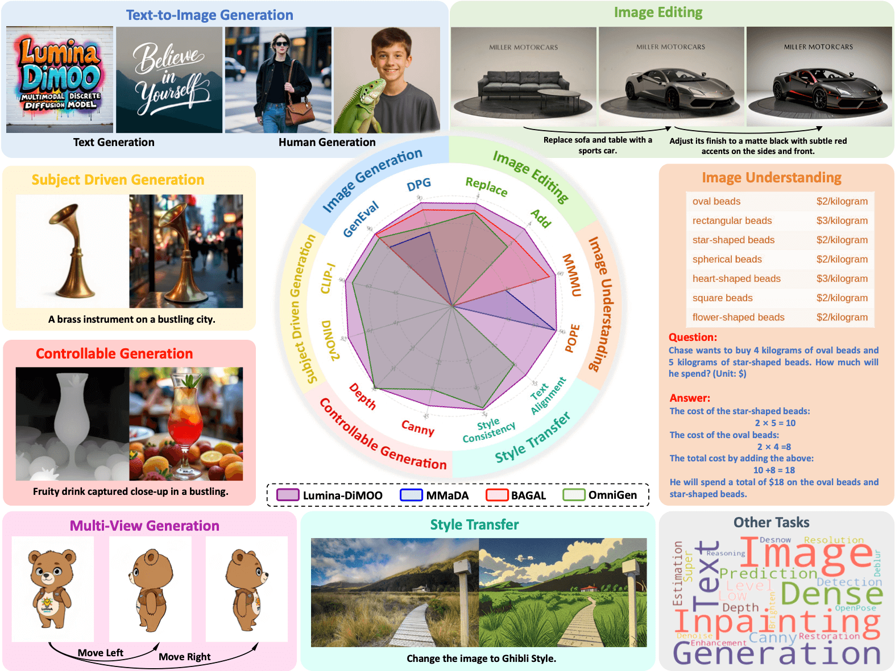

Jinbin Bai
I received B.S. in CS Degree from Nanjing University and high school diploma from
the Affiliated High School of Shanxi University. After that, I studied at CS Dept.
of National University of Singapore and founded MeissonFlow Research for
developing masking paradigm.
I am trying to find ways to build interactive models and algorithms for content
creation. I want to build the world with visual prior, though i sadly agree that the
language prior dominates current unified models. I love imagination, I love
Astronomy. So I made an analogy in the figure below.
Email /
Google
Scholar /
Github /
Hugging Face /
X
|
Jinbin in Cambridge, UK, 2025.
|
News
- 2025-09 Two papers accepted by NeurIPS 2025.
- 2025-06 Two papers accepted by ICCV 2025.
- 2025-04 One paper accepted by CVPR 2025 AI for Content Creation Workshop.
- 2025-04 One paper accepted by IJCAI 2025.
- 2025-04 Invited Talk from Riot Video Games.
- 2025-03 Awarded Frontier Top Ten Young Scholars Award (1st) from Century
Frontier Asset Management.
- 2025-03 Invited Talk from University of Illinois Urbana-Champaign (UIUC).
- 2025-02 One paper accepted by CVPR 2025.
- 2025-01 One paper accepted by ICLR 2025, see you in Singapore!
- 2024-12 One paper accepted by AAAI 2025.
- 2024-11 Invited Talk from Safe SuperIntelligence (SSI) Club.
- 2024-04 One paper accepted by IJCAI 2024, see you in Jeju!
- 2023-08 One paper accepted by BMVC 2023.
- 2023-07 Two papers accepted by ACM MM 2023.
- 2023-07 Two papers accepted by ICCV 2023.
- 2023-06 Taming Diffusion Models for Music-driven Conducting Motion
Generation accepted by AAAI 2023 Summer Symposium, with Best Paper
Award.
- 2023-05 One paper accepted by ICIP 2023, see you in Kuala Lumpur!
- 2023-02 Translating natural language to planning goals with
large-language models now on arxiv.
- 2022-11 One paper accepted by ACCV 2022.
- 2022-06 LaT: Latent Translation with Cycle-Consistency for Video-Text
Retrieval now on arxiv.
- 2021-03 Awarded as Outstanding Graduate by Nanjing
University.
- 2019-03 Awarded as Outstanding Student by Nanjing
University.
Selected Publications
|

|
|
From Masks to Worlds: A Hitchhiker’s Guide to World Models
Jinbin Bai, Yu Lei, Hecong Wu, Yuchen Zhu, Shufan Li, Yi Xin, Xiangtai Li, Molei Tao, Aditya Grover, Ming-Hsuan Yang
Technical Report 2025
[Paper]
[GitHub]
A Hitchhiker’s guide for those who want to build worlds. We follow one clear road: from early masked models, to unified architectures that share a single paradigm, then to interactive generative models, and finally to memory-augmented systems that sustain consistent worlds over time.
|
|
|
|

|
|
Lumina-DiMOO: An Omni Diffusion Large Language Model for Multi-Modal
Generation and Understanding
Alpha VLLM Team
Technical Report 2025
[Paper]
[Model]
[Code]
Lumina-DiMOO is a unified discrete diffusion model that can not only
generate high-resolution images, but support multimodal capabilities
including text-to-image, image-to-image, and image understanding.
|
|
|

|
|
Muddit: Liberating Generation Beyond Text-to-Image with a Unified Discrete Diffusion Model
MeissonFlow Research
Technical Report 2025
[Paper]
[Model]
[Code]
Muddit (offical Meissonic II) is a unified discrete diffusion model that can not only
generate high-resolution images, but support multimodal capabilities
including text-to-image, image-to-text, and VQA. We verified one unified model can be trained from visual prior learned by Meissonic!
|
|
|

|
|
Miscellaneous
- I am a huge fan of Cities: Skylines and I love designing and simulating cities. I can't
wait for the release of Cities: Skylines II on Oct 24th, 2023! And, I've attended World Cities Summit
(WCS) 2024 Conference!
- My favorite movies in recent years is Free Guy, and I dream of designing a game like
this.
- In my leisure moments, I delight in playing the piano surrounded by abundant greenery, finding peace and
emotional comfort in the solitude.
- I enjoy traveling and have visited 13 countries, guess where I have been?
- I like swimming, diving, surfing, beach under the sunshine.
|